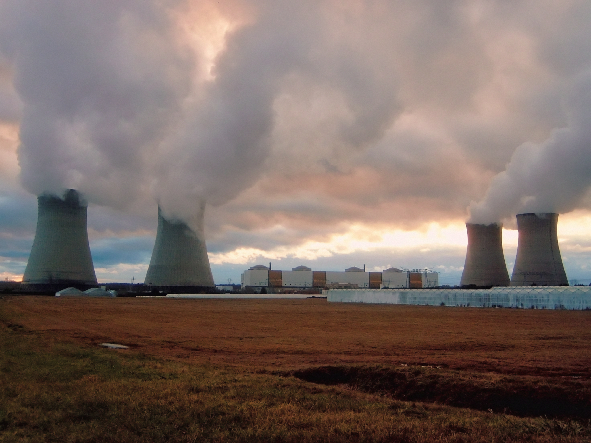
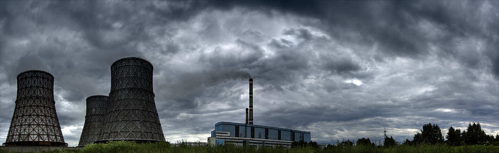
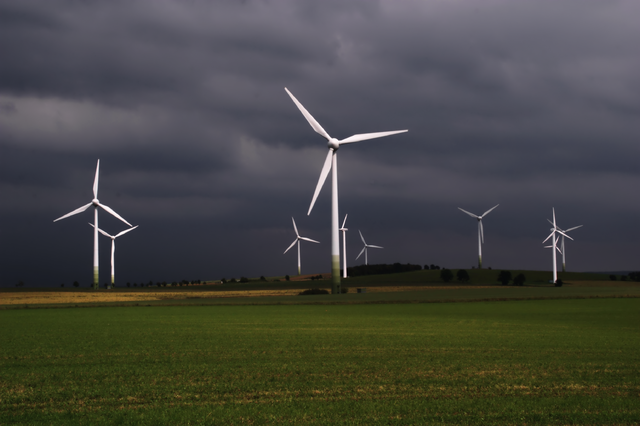

Энергетика - область хозяйственно-экономической деятельности деятельности, совокупность больших естественных и
искусственных подсистем, служающих для преобразования, распределения и использования энергетических ресурсов
всех видов. Её целью является обеспечение производства энергии путём преобразования первичной, природной
энергии во вторичную, например в электрическую или тепловую энергию. При этом производство энергии чаще всего
происходит в несколько стадий:
- получение и концентрация энергетических ресурсов, примером может послужить добыча, переработка и
обогащение ядерного топлива
- передача ресурсов к энергетическим установкам, например доставка газа, угля, мазута на тепловую
электростанцию
- преобразование с помошью электростанций первичной энергии во вторичную энергию, например, химической энергии угля
в электрическую и тепловую энергию
- передача вторичной энергии потребителям, например по линиям электропередачи
Электроэнергетика
Электроэнергетика — это подсистема энергетики, охватывающая
производство электроэнергии на электростанциях и её доставку
потребителям по линии электропередачи. Центральными её элементами
являются электростанции, которые принято классифицировать по виду
используемой первичной энергии и виду применяемых для этого
преобразователей. Необходимо отметить, что преобладание того или иного вида электростанций в определённом государстве зависит в первую очередь от наличия
соответсвующих ресурсов. Электроэнергетику принято делить на традиционную и нетрадиционную.
Доля различных источников
в мировом производстве электроэнергии
|
Уголь
|
Природный газ
|
ГЭС
|
АЭС
|
Нефть
|
Прочие
|
Всего
|
|
1973 год
|
38,3%
|
12,1%
|
20,9%
|
3,3%
|
24,8%
|
0,6%
|
6131 ТВт*ч
|
|
2015 год
|
39,3%
|
22,9%
|
16.0%
|
10,6%
|
4,1%
|
7,1%
|
24255 Тв*ч
|
Традиционная электроэнергетика
Характерной чертой электроенергетики является её давняя и хорошая освоенность, она прошла длительную проверку в разнообразных условиях
эксплуатации. Основную долю электроэнергии во всём мире получают именно на традиционных электростанциях, их единичная[3] электрическая мощность очень
часто превышает 1000Мвт. Традиционная электроэнергетика делится на несколько направлений.
Тепловая энергетика
В этой отрасли производство электроэнергии производится на тепловых электростанциях (ТЭС), использующих для этого химическую энергию органического топлива.
Они делятся:
- Паротурбинные электростанции, на которых энергия преобразуется с помощью паротурбинной установки
- Газотурбинные элетростанции, на которых энергия преобразуется с помощью газотурбинной установки
- Парогазовые электростанции, на которых энергия преобразуется с помошью парогазовой установки

Теплоэнергетика в мировом масштабе преобладает среди традиционных видов, на базе угля вырабатывается 46% всей электроэнергии мира, на базе газа - 18%,
еще около 3% - за счет сжигания биомасс, нефть используется для 0,2%. Суммарно тепловые станции обеспечивают около 2/3 общей выработки всех
электростанций мира.
Энергетика таких стран мира, как Польша и ЮАР практически полностью основана на использовании угля, а Нидерландов — газа. Очень велика доля теплоэнергетики
в Китае, Австралии, Мексике.
Гидроэнергетика
В этой отрасли электроэнергия производится на гидроэлектростанциях (ГЭС), использующих для этого энергию водного потока.
ГЭС преобладает в ряде стран - в Норвегии и Бразилии вся выработка электроэнергии происходит на них. Список стран, в которых
доля выработки ГЭС превышает 70% включает несколько десятков.
Гидроэнергетика
В этой отрасли электрэнергия производится на гидроэлектростанциях (ГЭС), использующих для этого енергию водного потока.
ГЭС преобладает в ряде стран - в Норвегии и Бразилии вся выработка электроэнергии происходит на них. Список стран, в которых
доля выработки ГЭС превышает 70%,включает несколько десятков.
Ядерная энергетика
Отрасль, в которой электроэнергия производится на атомных электростанциях (АЭС),
использующих для этого энергию управляемой цепной ядерной реакции, чаще всего урана и
плутония.
По доле АЭС в выработке электроэнергии первенствует Франция[8], около 70 %. Преобладает она также в Бельгии, Республике Корея
и некоторых других странах. Мировыми лидерами по производству электроэнергии на АЭС являются США, Франция и Япония
Нетрадиционная энергетика

Большинство направлений нетрадиционной электроэнергетики основаны на вполне традиционных принципах, но первичной
энергией в них служат либо источники локального значения, например ветряные, геотермальные, либо источники находящиеся в
стадии освоения, например топливные элементы или источники, которые могут найти применение в перспективе, например
термоядерная энергетика. Характерными чертами нетрадиционной энергетики являются их экологическая чистота, чрезвычайно
большие затраты на капитальное строительство (например для солнечной электростанции мощностью 1000 Мвт требуется покрыть
весьма дорогостоящими зеркалами площадь около 4-х км²) и малая единичная мощность[2]. Направления нетрадиционной
энергетики
- Малые электростванции
- Ветровая энергетика
- Геотермальная энергетика
- Солнечная энергетика
- Биоэнергетика
- Установки на топливных элементах
- Водородная энергетика
- Термоядерная энергетика
Также можно выделить важное из за своей массовости понятие - малая энергетика, этот термин не является в настоящее время общепринятым, наряду с ним
употребляется термины локальная энергетика, распределённая энергетика и др. Чаще всего так называют электростанции мощностью
до 30МВт с агрегатами единичной мощностью до 10МВт. Кним можно отнести ка экологичные виды энергетики, перечисленные выше, так и малые электростанции
на органическом топливе, такие как дизельные электростанции (среди малых электростанций их подавляющее большинство, например в Росии - примерно 96 %),
газопоршневые электростанции, газотурбинные установки малой мощности на дизельном и газовом топливе.
Электрическая сеть
Совокупность подстанций, распределительных устройств и соединяющих их линий электропередачи - называется электрической сетью.
Электрическая сеть - обеспечивает возможность выдачи мощности электростанций, её передачи на расстояние, преобразование параметров электроэнергии (напряжения, тока) на
подстанциях и её распределение по территории вплоть до непосредственных электроприёмников.
Электрические сети современных энергосистем являются многоступенчатые то есть электроэнергия претерпевает большое
количество трансформаций на пути от источником электроэнергии к ёё потребителям. Также для современных электрических сетей
характерна многорежимность, под чем понимается разнообразие загрузки элементов сети в суточном и годовом разрезе, а также
обилие режимов, возникающих при выводе различных элементов сети в плановыйй ремонт и при аварийных отключениях. Эти и
другие характериные черты современных электросетей делают их структуры и конфигурации весьма сложными и разнообразными.
Теплоснабжение
Жизнь современного человека связана с широким использованием не только электрической, но и тепловой энергии. Для того, чтобы
человек чувствовал себя комфортно дома, на работе, в любом общественном месте, все помещения должны отапливаться и
снабжаться горячей водой для бытовых целей. Так как это напрямую связано со здоровьем человека, в развитых государствах
пригодные температурные условия в различного рода помещениях регламентируются санитарными правилами и стандартами.
Такие условия могут быть реализованы в большинстве стран мира[17] только при постоянном подводе к объекту отопления
(теплоприёмнику) определённого количества тепла, которое зависит от температуры наружного воздуха, для чего чаще всего
используется горячая вода с конечной температурой у потребителей около 80—90 °C. Также для различных технологических
процессов промышленных предприятий может требоваться так называемый производственный пар с давлением 1—3 МПа. В
общем случае снабжение любого объекта теплом обеспечивается системой, состоящей из:
- источника тепла, например котельной
- тепловой сети, например из трубопроводов горячей воды или пара
- теплообменника, например батареи водяного отопления.
Централизованное теплоснабжение
Характерной чертой централизированного
теплоснабжения является наличие равлетвлённой тепловой сети, от которой питаются
многочисленные потребители (заводы, здания, жилые помещения и пр.) Для
централизованного теплоснабжения используют два вида источников:
- Теплоэлектроцентрали (ТЭЦ)
- Котельные, которые делятся на:
Децентрализованное теплоснабжение
Систему теплоснабжения называют децентрализованной, если источник теплоты и теплоприёмник практически совмещены, то есть тепловая сеть или очень
маленькая, или отсутствует. Такое теплоснабжение может быть индивидуальным, когда в каждом помещении используются отдельные отопительные приборы
например электрические, или местным, например обогрев здания с помощью собственной малой котельной. Обычно теплопроизводительность таких котельных не
превышает 1 Гкал/ч (1,163 МВт). Мощность тепловых источников индивидуального теплоснабжения обычно совсем невелика и определяется потребностями их
владельцев. Виды децентрализованного отопления:
- Малые котельные
- Электрическое, которое делится на:
- Прямое
- Акамуляционное
- Теплонасосное
- Печное
Тепловые сети
Тепловая сеть - это сложное инженерное-строительное сооружение, служащее для транспорта тепла с помошью теплоносителя, воды или пара, от источника, ТЭЦ
или котельной, к тепловым потребителям.
От коллекторов прямой сетевой воды с помощью магистральных теплопроводов горячая вода подаётся в населённые пункты. Магистральные теплопроводы имеют
ответвления, к которым присоединяется разводка к тепловым пунктам, в которых находится теплообменное оборудование с регуляторами, обеспечивающими
снабжение потребителей тепла и горячей воды. Тепловые магистрали соседних ТЭЦ и котельных для повышения надёжности теплоснабжения соединяют
перемычками с запорной арматурой, которые позволяют обеспечить бесперебойное теплоснабжение даже при авариях и ремонтах отдельных участков тепловых
сетей и источников теплоснабжения. Таким образом, тепловая сеть любого города является сложнейшим комплексом теплопроводов, источников тепла и его
потребителей
Энергетическое топлиово
Так как большинство их традиционных электростанций и источником теплоснабжения выделяют энергию из невозобновляемых
ресурсов, вопросы добычи, переработки и доставки топлива чрезвычайно важны в энергетике. В традиционной энергетике
используются два принципиально отличных друг от друга видов топлива.
Органическое топливо
В зависимости от агрегатного состояния органическое топливо делится на газообразное, жидкое и твёрдое, каждое из них в свою
очередь делится на естественное и искусственное. Доля такого топлива в мировом энергобалансе составляла в 2000 году около
65% из которых 39% приходится на уголь, 16% на природный газ, 9% на жидкое топливо (2000г). В 2010 году по данным BP доля
ископаемого органического топлива 87%, втом числе: нефть 33,6 %, уголь 29,6 % газ 23,8 %. То же под анным Renewable21
80,6%, не считая традиционной биомассы 8,5 %.
Природный газ
Естественным топливом является природный газ, искуственным:
- Генераторный газ
- Коксовый газ
- Доменный газ
- Продукты перегонки нефти
- Газ подземной газификации
- Биогаз
- синтез-газ
Жидкое
Естественным топливом является нефть, искуственным называют продукты его перегонки:
- Бензин
- Керосин
- Соляровое масло
- Мазут
Твёрдое
Естественным топливом являются:
- Ископаемое топливо
- Торф
- Бурый уголь
- Каменный уголь
- Антрацит
- Горючий сланец
- Растительное топливо
- Дрова
- Древесные отходы
- Топливные брикеты
- Топливные гранулы
Искусственным твёрдым топливом являются:
- Древесный уголь
- Кокс и полубокс
- Углебрикеты
- Отходы углеобогащения
Ядерное топливо
В использовании ядерного топлива вместо органического состоит главное и принципиальное отличие АЭС от ТЭС. Ядерное топливо получают из природного урана
который добывают:
- В шахтах (Франция, Нигер, Намбия
- В открытых карьерах(Австралия, Намибия)
- способом подземного выщелачивания (Казахстан, США, Канада, Россия).
Для использования на АЭС требуется обогащение урана, поэтому его после добычи отправляют на обогатительный завод, после переработки на котором 90 %
побочного обеднённого урана направляется на хранение, а 10 % обогащается до нескольких процентов (3—5 % для энергетических реакторов). Обогащённый диоксид
урана направляется на специальный завод, где из него изготавливают цилиндрические таблетки[20], которые помещают в герметичные циркониевые трубки длиной
почти 4 м, ТВЭЛы (тепловыделяющие элементы). По нескольку сотен ТВЭЛов для удобства использования объединяют в ТВС, тепловыделяющие сборки.